| 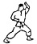 | Age Uke | Parata alta. Il braccio si solleva frontalmente fino all’altezza dell’orecchio, ruotando il polso durante il movimento. |
| 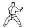 | Uchi Uke | Parata interna. Dal fianco opposto all’esterno con gomito a 90° e pugno all’altezza del mento. |
| 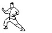 | Soto Uke | Parata esterna. Dal lato all’orecchio, poi verso l’interno e in avanti per deviare un pugno. |
| 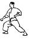 | Gedan Barai | Parata bassa. Movimento a semicerchio verso il basso per deviare calci con la parte esterna del polso. |
| 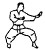 | Shuto Uke | Parata con il taglio della mano. Ruotare il corpo portando la mano aperta avanti con gomito a 90°. |
| 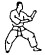 | Morote Uke | Parata rinforzata. Un Uchi Uke supportato dalla mano opposta sopra il gomito. |
| 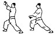 | Juji Uke | Parata a X. Le mani si incrociano all’altezza dei polsi. Possono essere aperte o chiuse. |
 | Teisho Uke | Parata con la base del palmo. Si usa per deviare avambraccio o gamba dell’avversario. |
| 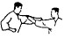 | Haishu Uke | Parata con il dorso della mano. Movimento di slancio per colpire l’avambraccio dell’avversario. |
| 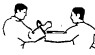 | Tate Shuto Uke | Parata con taglio verticale della mano. Movimento dall’interno verso l’esterno con dita rivolte in su. |
| Kake Shuto Uke | Parata agganciante. Dopo la parata si afferra il braccio dell’avversario per sbilanciarlo. |
| 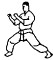 | Kakiwake Uke | Parata doppia. Da presa al collo, si spingono le braccia verso l’esterno per liberarsi. |
| 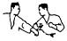 | Osae Uke | Parata con pressione. Si colpisce il braccio dell’avversario verso il basso e lo si tira a sé. |
| Te Nagashi Uke | Parata con spazzata della mano. Si devia il pugno dell’avversario verso l’esterno. |
| Hai Wan Nagashi Uke | Spazzata con l’avambraccio. Movimento fluido e deviazione verso l’alto. |
| 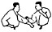 | Tettsui Uke | Parata con la mano a martello. |
| Keito Uke | Parata con la base del pollice. Movimento dal basso verso l’alto. |
| 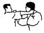 | Tekubi Kake Uke | Parata a uncino con il polso. Movimento di 270° laterale e in alto. |
| 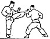 | Sukui Uke | Parata a cucchiaio. Agganciare la caviglia dell’avversario con la mano aperta e sollevarla. |
| 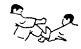 | Mikazuki Geri Uke | Parata con calcio a semicerchio. Si usa la pianta del piede per deviare un pugno. |
| 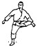 | Nami Ashi Uke | Parata con il piede. Usata per deviare un calcio all’inguine. |
| 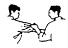 | Tsukami Uke | Parata con presa. Si afferra polso e gomito dell’avversario e lo si tira verso l’esterno. |
| Otoshi Uke | Parata discendente. Spinta forte verso il basso per deviare un attacco all’addome. |
| Kakuto Uke | Parata con il dorso del polso. Movimento dal basso verso l’alto con polso piegato. |
| Seiryuto Uke | Parata con la base del taglio della mano. Movimento dall’alto in basso per deviare gamba o avambraccio. |